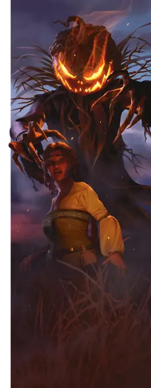

Пугало
Scarecrow
Средний Конструкт, Хаотичный Злой

Класс Защиты 11 Инициатива +3 (13)
Хиты 27 (6к8)
Скорость 30 футов
| мод | спас | ||
|---|---|---|---|
| СИЛ | 11 | +0 | +0 |
| ЛОВ | 13 | +1 | +1 |
| ТЕЛ | 11 | +0 | +0 |
| мод | спас | ||
|---|---|---|---|
| ИНТ | 10 | +0 | +0 |
| МДР | 10 | +0 | +0 |
| ХАР | 13 | +1 | +1 |
Уязвимость к урону Огонь
Иммунитеты Яд; Бессознательный, Испуганный, Истощение, Окаменевший, Отравленный, Очарованный, Парализованный
Чувства Тёмное зрение 60 футов, пассивное Восприятие 10
Языки Общий
Опасность 1 (200 опыта; БВ +2)
Действия
Пугающие когти. Бросок рукопашной атаки: +3, досягаемость 5 фт. Попадание: 6 (2к4 + 1) Рубящего урона, и цель Испугана до конца следующего хода пугала.
Ужасающий взор. Спасбросок Мудрости: Сл 11, одно видимое пугалом существо в 30 футах. Провал: Цель Испугана до конца следующего хода пугала. Пока цель Испугана таким образом, она также Парализована.
Бонус мастерства +2
Среда обитания Леса, Страна фей
Сокровища Инструментальные
Пугало
Слуга суеверий
Пугала — духи отмщения, привязанные к грубым остовым, которые возникают благодаря народной магии, молитвам отчаявшихся крестьян или вселению душ, что умерли, не завершив жестокого дела. Пугала могут служить тем, кто их создал, или защищать место, семью или общину от угроз — будь то явная опасность или посягательство на уклад жизни.
Хотя своим названием пугала обязаны деревенским чучелам, облик они принимают самый разный. Совершите бросок по таблице «Остовы пугал» для вдохновения или определите сами обличие пугала.
Остовы пугал
| к8 | Пугало сделано из… |
| 1 | Звериных шкур, костей, рогов и когтей. |
| 2 | Пчелиных или осиных гнёзд, насаженных на плетёный каркас. |
| 3 | Вырезанной тыквы, надетой поверх тела из толстых лоз. |
| 4 | Сетей, обломков, абордажных крючьев и рыболовных снастей. |
| 5 | Частей огромных мягких игрушек или манекенов. |
| 6 | Ржавых доспехов и пыточных орудий. |
| 7 | Головы из мешковины и одежды, набитой соломой. |
| 8 | Свадебного наряда, который ни разу не надели. |